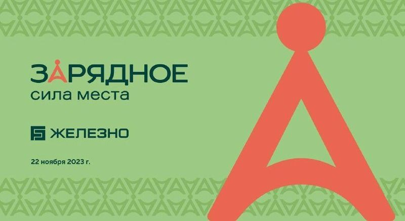
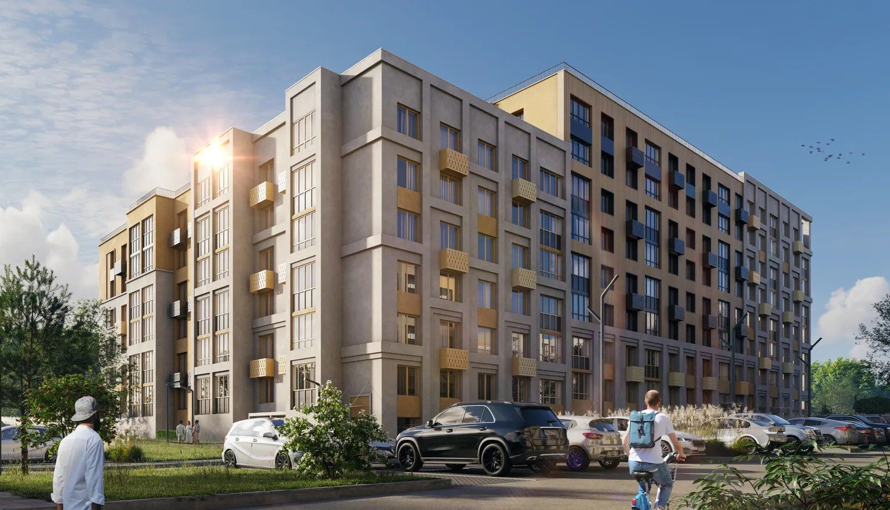
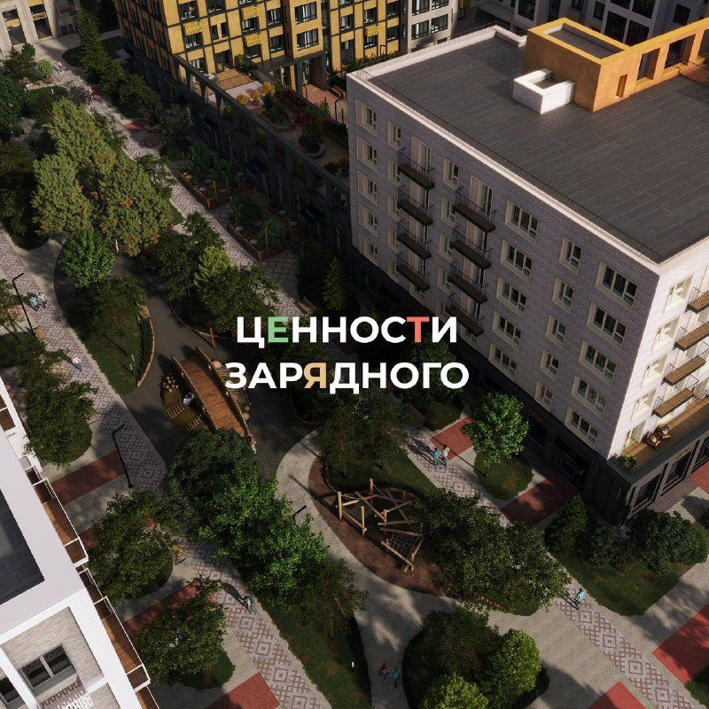

Презентация НОВОГО проекта в Кирове — жилого комплекса «Зарядное». Зарядитесь силой места… Сделано местными с любовью для местных.
22 ноября 2023650 просмотров
Как написали бы сейчас: Пять сил одного места: роща, небо, соседи, семья и Вятка. Знакомьтесь — «Зарядное». Построено местными для местных.
Локальная гордость с первого дня

Ж
Железно | Киров
Сила места
Сила места. ЗАРЯДНОЕ — новый проект… Здесь вы сможете вести полноценный и здоровый образ жизни… воодушевляться культурным кодом Вятки.
29 ноября 2023626 просмотров
Как написали бы сейчас: Здесь нет высоток — и это решение. Небо, роща и дубовая аллея остаются вашими каждый день.
Большая идея в заголовке

ЦЕННОСТИ ЗАРЯДНОГО. Заряжайтесь и наполняйтесь энергией благодаря силам природы, комфортного отдыха, спорта на свежем воздухе и счастливого детства.
14 декабря 2023573 просмотра
Как написали бы сейчас: Сила природы — роща у подъезда. Сила спорта — памп-трек во дворе. Сила детства — сад на 191 место. В чём ваша сила?
Пять сил как опоры сообщения
Ж
Железно | Киров
Доказательство
Большое открытие парка «Сила корней». Здесь мы сохранили многолетние деревья, вдохновились вятскими лесами — чтобы каждый почувствовал связь с природой и историей родного края.
13 октября 20252,63 тыс. просмотров
Как написали бы сейчас: Парк «Сила корней» открыт. Многолетние деревья сохранили, новые посадили вместе с семьями. Приходите найти своё.
Идея живёт в продукте спустя два года